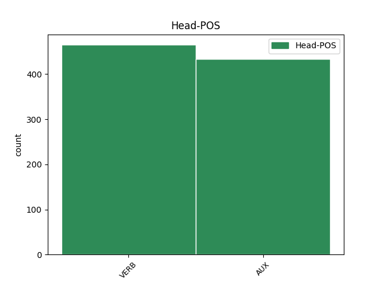

Distribution of features within this leaf

Agreement Rules sorted by frequency.
- When the dependent token is the conjunct(conj) of the head token, and the dependent token is VERB.
1 Program _ _ _ _ 0 _ _ _
2 cpio _ _ _ _ 0 _ _ _
3 obnovi obnoviti VERB Vmer3s Aspect=Perf|Mood=Ind|Number=Sing|Person=3|Tense=Pres|VerbForm=Fin 0 _ _ _
4 imenik _ _ _ _ 0 _ _ _
5 in _ _ _ _ 0 _ _ _
6 na _ _ _ _ 0 _ _ _
7 koncu _ _ _ _ 0 _ _ _
8 izpiše izpisati VERB Vmer3s Aspect=Perf|Mood=Ind|Number=Sing|Person=3|Tense=Pres|VerbForm=Fin 3 conj _ Dep=0|Rel=Root
9 število _ _ _ _ 0 _ _ _
10 512 _ _ _ _ 0 _ _ _
11 - _ _ _ _ 0 _ _ _
12 znakovnih _ _ _ _ 0 _ _ _
13 blokov _ _ _ _ 0 _ _ _
14 , _ _ _ _ 0 _ _ _
15 ki _ _ _ _ 0 _ _ _
16 so _ _ _ _ 0 _ _ _
17 bili _ _ _ _ 0 _ _ _
18 zapisani _ _ _ _ 0 _ _ _
19 na _ _ _ _ 0 _ _ _
20 trdi _ _ _ _ 0 _ _ _
21 disk _ _ _ _ 0 _ _ _
22 . _ _ _ _ 0 _ _ _
1 Kraljičino _ _ _ _ 0 _ _ _
2 zaničevanje _ _ _ _ 0 _ _ _
3 je biti AUX Va-r3s-n Mood=Ind|Number=Sing|Person=3|Polarity=Pos|Tense=Pres|VerbForm=Fin 0 _ _ _
4 kardinala _ _ _ _ 0 _ _ _
5 Rohana _ _ _ _ 0 _ _ _
6 zelo _ _ _ _ 0 _ _ _
7 bolelo _ _ _ _ 0 _ _ _
8 , _ _ _ _ 0 _ _ _
9 zato _ _ _ _ 0 _ _ _
10 je biti AUX Va-r3s-n Mood=Ind|Number=Sing|Person=3|Polarity=Pos|Tense=Pres|VerbForm=Fin 3 conj _ Dep=12|Rel=PPart
11 dolgo _ _ _ _ 0 _ _ _
12 razmišljal _ _ _ _ 0 _ _ _
13 , _ _ _ _ 0 _ _ _
14 kako _ _ _ _ 0 _ _ _
15 bi _ _ _ _ 0 _ _ _
16 si _ _ _ _ 0 _ _ _
17 pridobil _ _ _ _ 0 _ _ _
18 njeno _ _ _ _ 0 _ _ _
19 milost _ _ _ _ 0 _ _ _
20 . _ _ _ _ 0 _ _ _
1 Živijo _ _ _ _ 0 _ _ _
2 , _ _ _ _ 0 _ _ _
3 jaz jaz PRON Pp1-sn Case=Nom|Number=Sing|Person=1|PronType=Prs 4 subj _ Dep=4|Rel=Sb
4 sem biti AUX Va-r1s-n Mood=Ind|Number=Sing|Person=1|Polarity=Pos|Tense=Pres|VerbForm=Fin 0 _ _ _
5 Julia _ _ _ _ 0 _ _ _
6 . _ _ _ _ 0 _ _ _
1 Zanima zanimati VERB Vmpr3s Aspect=Imp|Mood=Ind|Number=Sing|Person=3|Tense=Pres|VerbForm=Fin 0 _ _ _
2 me _ _ _ _ 0 _ _ _
3 , _ _ _ _ 0 _ _ _
4 zakaj _ _ _ _ 0 _ _ _
5 moški _ _ _ _ 0 _ _ _
6 hranijo hraniti VERB Vmpr3p Aspect=Imp|Mood=Ind|Number=Plur|Person=3|Tense=Pres|VerbForm=Fin 1 subj _ Dep=1|Rel=Sb
7 Playboye _ _ _ _ 0 _ _ _
8 ? _ _ _ _ 0 _ _ _
1 Kar _ _ _ _ 0 _ _ _
2 je biti AUX Va-r3s-n Mood=Ind|Number=Sing|Person=3|Polarity=Pos|Tense=Pres|VerbForm=Fin 7 subj _ Dep=7|Rel=Sb
3 videti _ _ _ _ 0 _ _ _
4 navzven _ _ _ _ 0 _ _ _
5 predano _ _ _ _ 0 _ _ _
6 , _ _ _ _ 0 _ _ _
7 je biti VERB Va-r3s-n Mood=Ind|Number=Sing|Person=3|Polarity=Pos|Tense=Pres|VerbForm=Fin 0 _ _ _
8 v _ _ _ _ 0 _ _ _
9 resnici _ _ _ _ 0 _ _ _
10 vam _ _ _ _ 0 _ _ _
11 v _ _ _ _ 0 _ _ _
12 korist _ _ _ _ 0 _ _ _
13 , _ _ _ _ 0 _ _ _
14 saj _ _ _ _ 0 _ _ _
15 pridobite _ _ _ _ 0 _ _ _
16 . _ _ _ _ 0 _ _ _
1 - _ _ _ _ 0 _ _ _
2 Z _ _ _ _ 0 _ _ _
3 DNEM _ _ _ _ 0 _ _ _
4 PRENEHANJA _ _ _ _ 0 _ _ _
5 VELJAVNOSTI _ _ _ _ 0 _ _ _
6 DELOVNEGA _ _ _ _ 0 _ _ _
7 DOVOLJENJA _ _ _ _ 0 _ _ _
8 POGODBA _ _ _ _ 0 _ _ _
9 O _ _ _ _ 0 _ _ _
10 ZAPOSLITVI _ _ _ _ 0 _ _ _
11 , _ _ _ _ 0 _ _ _
12 KI _ _ _ _ 0 _ _ _
13 JO on PRON Pp3fsa--y Case=Acc|Gender=Fem|Number=Sing|Person=3|PronType=Prs|Variant=Short 14 unk@expl _ Dep=14|Rel=PPart
14 SKLENE skleniti VERB Vmer3s Aspect=Perf|Mood=Ind|Number=Sing|Person=3|Tense=Pres|VerbForm=Fin 0 _ _ _
15 TUJEC _ _ _ _ 0 _ _ _
16 ALI _ _ _ _ 0 _ _ _
17 OSEBA _ _ _ _ 0 _ _ _
18 BREZ _ _ _ _ 0 _ _ _
19 DRŽAVLJANSTVA _ _ _ _ 0 _ _ _
20 , _ _ _ _ 0 _ _ _
21 PRENEHA _ _ _ _ 0 _ _ _
22 VELJATI _ _ _ _ 0 _ _ _
23 PO _ _ _ _ 0 _ _ _
24 SAMEM _ _ _ _ 0 _ _ _
25 ZAKONU _ _ _ _ 0 _ _ _
26 . _ _ _ _ 0 _ _ _
1 Res _ _ _ _ 0 _ _ _
2 je _ _ _ _ 0 _ _ _
3 , _ _ _ _ 0 _ _ _
4 da _ _ _ _ 0 _ _ _
5 ni _ _ _ _ 0 _ _ _
6 popolno _ _ _ _ 0 _ _ _
7 , _ _ _ _ 0 _ _ _
8 a _ _ _ _ 0 _ _ _
9 to _ _ _ _ 0 _ _ _
10 sem biti AUX Va-r1s-n Mood=Ind|Number=Sing|Person=1|Polarity=Pos|Tense=Pres|VerbForm=Fin 0 _ _ _
11 jaz jaz PRON Pp1-sn Case=Nom|Number=Sing|Person=1|PronType=Prs 10 comp:pred _ Dep=10|Rel=Atr|SpaceAfter=No
12 . _ _ _ _ 0 _ _ _
1 Hočeš hoteti VERB Vmpr2s-n Aspect=Imp|Mood=Ind|Number=Sing|Person=2|Polarity=Pos|Tense=Pres|VerbForm=Fin 0 _ _ _
2 nočeš hoteti VERB Vmpr2s-y Aspect=Imp|Mood=Ind|Number=Sing|Person=2|Polarity=Neg|Tense=Pres|VerbForm=Fin 1 unk@fixed _ Dep=1|Rel=MWU
3 sta _ _ _ _ 0 _ _ _
4 jo _ _ _ _ 0 _ _ _
5 puntarja _ _ _ _ 0 _ _ _
6 ubrala _ _ _ _ 0 _ _ _
7 zraven _ _ _ _ 0 _ _ _
8 in _ _ _ _ 0 _ _ _
9 kobilice _ _ _ _ 0 _ _ _
10 so _ _ _ _ 0 _ _ _
11 v _ _ _ _ 0 _ _ _
12 diru _ _ _ _ 0 _ _ _
13 odskakljale _ _ _ _ 0 _ _ _
14 proti _ _ _ _ 0 _ _ _
15 svojemu _ _ _ _ 0 _ _ _
16 plenišču _ _ _ _ 0 _ _ _
17 . _ _ _ _ 0 _ _ _
Disagree Examples:
1 Vpišemo vpisati VERB Vmer1p Aspect=Perf|Mood=Ind|Number=Plur|Person=1|Tense=Pres|VerbForm=Fin 0 _ _ _
2 številko _ _ _ _ 0 _ _ _
3 čevlja _ _ _ _ 0 _ _ _
4 ali _ _ _ _ 0 _ _ _
5 konfekcijsko _ _ _ _ 0 _ _ _
6 številko _ _ _ _ 0 _ _ _
7 in _ _ _ _ 0 _ _ _
8 poda podati VERB Vmbr3s Mood=Ind|Number=Sing|Person=3|Tense=Pres|VerbForm=Fin 1 conj _ Dep=0|Rel=Root
9 nam _ _ _ _ 0 _ _ _
10 vrednosti _ _ _ _ 0 _ _ _
11 na _ _ _ _ 0 _ _ _
12 Japonskem _ _ _ _ 0 _ _ _
13 , _ _ _ _ 0 _ _ _
14 v _ _ _ _ 0 _ _ _
15 Mehiki _ _ _ _ 0 _ _ _
16 , _ _ _ _ 0 _ _ _
17 Veliki _ _ _ _ 0 _ _ _
18 Britaniji _ _ _ _ 0 _ _ _
19 , _ _ _ _ 0 _ _ _
20 ZDA _ _ _ _ 0 _ _ _
21 … _ _ _ _ 0 _ _ _
1 V _ _ _ _ 0 _ _ _
2 prijetni _ _ _ _ 0 _ _ _
3 družbi _ _ _ _ 0 _ _ _
4 boste _ _ _ _ 0 _ _ _
5 izvedeli _ _ _ _ 0 _ _ _
6 , _ _ _ _ 0 _ _ _
7 kar _ _ _ _ 0 _ _ _
8 boste biti AUX Va-f2p-n Mood=Ind|Number=Plur|Person=2|Polarity=Pos|Tense=Fut|VerbForm=Fin 0 _ _ _
9 želeli _ _ _ _ 0 _ _ _
10 , _ _ _ _ 0 _ _ _
11 in _ _ _ _ 0 _ _ _
12 to _ _ _ _ 0 _ _ _
13 vam _ _ _ _ 0 _ _ _
14 bo biti AUX Va-f3s-n Mood=Ind|Number=Sing|Person=3|Polarity=Pos|Tense=Fut|VerbForm=Fin 8 conj _ Dep=16|Rel=PPart
15 veliko _ _ _ _ 0 _ _ _
16 pomagalo _ _ _ _ 0 _ _ _
17 pri _ _ _ _ 0 _ _ _
18 premagovanju _ _ _ _ 0 _ _ _
19 vaših _ _ _ _ 0 _ _ _
20 finančnih _ _ _ _ 0 _ _ _
21 težav _ _ _ _ 0 _ _ _
22 . _ _ _ _ 0 _ _ _
1 Vreme _ _ _ _ 0 _ _ _
2 ne _ _ _ _ 0 _ _ _
3 kaže kazati VERB Vmpr3s Aspect=Imp|Mood=Ind|Number=Sing|Person=3|Tense=Pres|VerbForm=Fin 0 _ _ _
4 kdove _ _ _ _ 0 _ _ _
5 kakšnih _ _ _ _ 0 _ _ _
6 upov _ _ _ _ 0 _ _ _
7 , _ _ _ _ 0 _ _ _
8 vendar _ _ _ _ 0 _ _ _
9 se _ _ _ _ 0 _ _ _
10 za _ _ _ _ 0 _ _ _
11 jutrišnjo _ _ _ _ 0 _ _ _
12 turo _ _ _ _ 0 _ _ _
13 pripravljamo pripravljati VERB Vmpr1p Aspect=Imp|Mood=Ind|Number=Plur|Person=1|Tense=Pres|VerbForm=Fin 3 conj _ Dep=0|Rel=Root
14 zares _ _ _ _ 0 _ _ _
15 . _ _ _ _ 0 _ _ _
1 Divji _ _ _ _ 0 _ _ _
2 zahodnik _ _ _ _ 0 _ _ _
3 stresa _ _ _ _ 0 _ _ _
4 bajto _ _ _ _ 0 _ _ _
5 , _ _ _ _ 0 _ _ _
6 ko _ _ _ _ 0 _ _ _
7 lezemo lesti VERB Vmpr1p Aspect=Imp|Mood=Ind|Number=Plur|Person=1|Tense=Pres|VerbForm=Fin 0 _ _ _
8 v _ _ _ _ 0 _ _ _
9 spalne _ _ _ _ 0 _ _ _
10 vreče _ _ _ _ 0 _ _ _
11 in _ _ _ _ 0 _ _ _
12 na _ _ _ _ 0 _ _ _
13 nebu _ _ _ _ 0 _ _ _
14 ugaša ugašati VERB Vmpr3s Aspect=Imp|Mood=Ind|Number=Sing|Person=3|Tense=Pres|VerbForm=Fin 7 conj _ Dep=0|Rel=Root
15 poslednja _ _ _ _ 0 _ _ _
16 dnevna _ _ _ _ 0 _ _ _
17 luč _ _ _ _ 0 _ _ _
18 . _ _ _ _ 0 _ _ _
1 Postajava postajati VERB Vmpr1d Aspect=Imp|Mood=Ind|Number=Dual|Person=1|Tense=Pres|VerbForm=Fin 0 _ _ _
2 nestrpna _ _ _ _ 0 _ _ _
3 , _ _ _ _ 0 _ _ _
4 kajti _ _ _ _ 0 _ _ _
5 podoba _ _ _ _ 0 _ _ _
6 je biti AUX Va-r3s-n Mood=Ind|Number=Sing|Person=3|Polarity=Pos|Tense=Pres|VerbForm=Fin 1 conj _ Dep=0|Rel=Root|SpaceAfter=No
7 , _ _ _ _ 0 _ _ _
8 da _ _ _ _ 0 _ _ _
9 bova _ _ _ _ 0 _ _ _
10 ves _ _ _ _ 0 _ _ _
11 čas _ _ _ _ 0 _ _ _
12 vzpona _ _ _ _ 0 _ _ _
13 čakala _ _ _ _ 0 _ _ _
14 na _ _ _ _ 0 _ _ _
15 stojiščih _ _ _ _ 0 _ _ _
16 , _ _ _ _ 0 _ _ _
17 da _ _ _ _ 0 _ _ _
18 se _ _ _ _ 0 _ _ _
19 bodo _ _ _ _ 0 _ _ _
20 najini _ _ _ _ 0 _ _ _
21 predhodniki _ _ _ _ 0 _ _ _
22 spravili _ _ _ _ 0 _ _ _
23 naprej _ _ _ _ 0 _ _ _
24 . _ _ _ _ 0 _ _ _